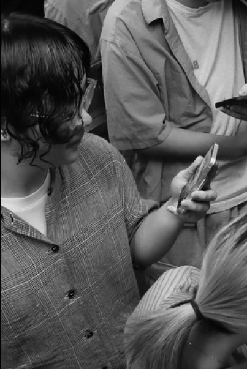
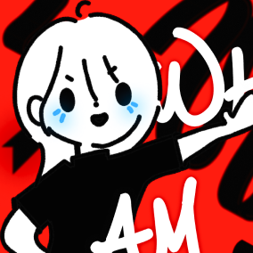
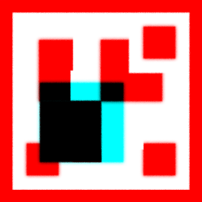
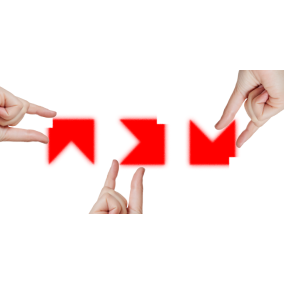
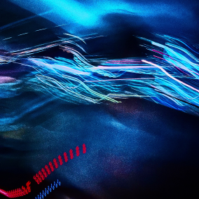
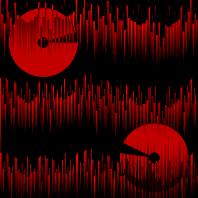
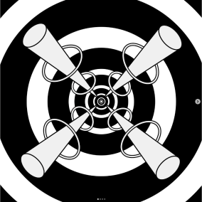

ABOUT

#Game
#Application
#Web
#Interactive Art
PROJECT
Musam
Musam is a 2D art project that explores visual rhythm and
composition through the lens of digital minimalism, created
entirely using...
2023 ~

Ctrl + SHF
Navb is a personalized language acquisition platform that
leverages AI script analysis and repeated practice (shadowing)
based on vid..
2024 ~2025
Navb
Ctrl + SHF is a game development team that created the game
“Myung-hwa’s Daily Life” as part of the Netmarble Game Academy.
2025 ~
WORKS
digital_flower_16
“digital_flower_16” is a work that visualizes an attempt to
replicate a flower—or something resembling one—from the real
world, using...
2025

hands & symbols
“Hands and Symbols” is an interactive media art piece that seeks
to uncover and transform the digitized desires of human beings.
2025

Bang Soyun
“Bang Soyoon” is a psychedelic work using fragments and
hallucinatory effects, made in collaboration with digital artist
Bang Soyoon.
2024

light me
“Light Me” is a photo work of the artist’s shadow on a window,
crossed by flickering city lights. Location: Hong Kong.
2025

Your improper emoti...
Your improper emotional API calls have caused 37 consecutive
engine failures in my cardiac rendering pipeline.
2025

At the end of countl...
This work uses converging cones toward a single point to
symbolize humanity’s collective journey toward a shared essence
or purpose.
2025
